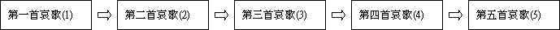
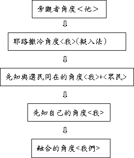
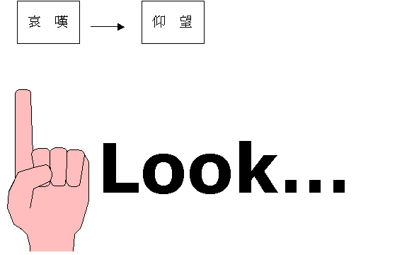

Ａ．緒論
一．書名
１．希伯來正典：「何竟」（以首字為書名）是一種驚嘆的字句
２．七十士譯本（希臘文）：「哀歌」
３．亞蘭文譯本：「哀歌」
４．後期版本：「耶利米哀歌」
二．時代
「耶和華發怒成就他所定的，倒出他的烈怒；在錫安使火著起，燒毀錫安的根基。地上的君王和世上的居民都不信敵人和仇敵能進耶路撒冷的城門。」哀4:11-12
〜城被火焚燒，敵人進耶路撒冷門，應指巴比倫攻陷耶路撒冷時期，大概是主前５８７年
三．作者──耶利米
「耶利米為約西亞作哀歌。所有歌唱的男女也唱哀歌，追悼約西亞，直到今日；而且在以色列中成了定例。這歌載在哀歌書上。」代下35:25
「我眼中流淚，以致失明；我的心腸擾亂，肝膽塗地，都因我眾民遭毀滅，又因孩童和吃奶的在城內街上發昏。」哀2:11
「耶和華啊，我從深牢中求告你的名。你曾聽見我的聲音；我求你解救，你不要掩耳不聽。我求告你的日子，你臨近我，說：不要懼怕！主啊，你伸明了我的冤；你救贖了我的命。耶和華啊，你見了我受的委屈；求你為我伸冤。」哀3:55-59
〜從作者的遭遇（被困在牢中，被人屈），封民族的情懷（眼中流淚），書中內容（與耶利米書極相似），舊約時代的肯定，本書作者應是耶利米
〜七十士譯本特別在本書之首說明：「以色列人被擄，耶路撒冷成為荒涼之，耶利米坐著哭泣，為 耶路撒冷唱出哀歌」
四．文體
〜用詩歌的文體
〜把希伯來２２個母依次嵌在每一節（第１，２，４章）或每三節（第３章）的字頭，但第５章除外
〜所以，１，２，４章有２２節，第３章有６６節，第５章仍有２２節
五．主題──哀歎與仰望
〜本書是哀歌，充滿了驚歎：「何竟」「嘆息」及哀傷：「哭泣」「眼淚」悲痛等字
〜但內裏仍含「求你」「仰望」「等候」對神發出呼求及仰望字眼
〜耶利米書的主題是「拆毀與建立」，耶利米哀歌則是人在拆毀中發出的哀歎及對神施恩及建立中的仰望
六．結構
１．簡單概括的結構

２．由淺入深的剖釋
ａ．逐層的代入──身同感受

ｂ．加深的描述──選民慘況
〜對選民受管教的慘況，一章比一章更慘，失去昔日光輝，到神並不顧惜，最後至神離棄！
ｃ．逐步的解釋──管教原因
〜為何選民遭如此管教，每一部份都解釋原因，一章比一章更深入講明
ｄ．超越的仰望──絕境出路
〜作者帶讀者由單是呼求神觀看 求神報仇 相信神恩
求神記念 至求神使他們回轉
〜對神加深的認定，帶選民在絕望中如何一步一步離開幽谷，等候仰望天上的神
七．真理
１．認識如何與哀哭的人同哭，如何用不同角度代入對方感受，發出哀痛
２．學習先知對同胞，對民族的情懷
３．知道神管教的方式，及人被管教之原因，作為信徒的提醒與鑑戒
４．人在逆境中的出路與盼望
５．對神的公義與憐憫有更深的認定
Ｂ．內容
一．第一首哀歌（１）
１．用旁觀者的角度（１：１－１１）
〜用＜他＞字眼，旁觀者看耶路撒冷＜他＞的情況
ａ．慘況──神奪回他們光輝
i.失去外交
「先前滿有人民的城，現在何竟獨坐！先前在列國中為大的，現在竟如寡婦；先前在諸省中為王后的，現在成為進貢的。他夜間痛哭，淚流滿腮；在一切所親愛的中間沒有一個安慰他的。他的朋友都以詭詐待他，成為他的仇敵。」1:1-2
ii.失去威榮
「錫安城（原文作女子；下同）的威榮全都失去。他的首領像找不著草場的鹿；在追趕的人前無力行走。」1:6
iii.失去福樂
「耶路撒冷在困苦窘迫之時，就追想古時一切的樂境。他百姓落在敵人手中，無人救濟；敵人看見，就因他的荒涼嗤笑。」1:7
iv.失去尊貴
「耶路撒冷大大犯罪，所以成為不潔之物；素來尊敬他的，見他赤露就都藐視他；他自己也歎息退後。」1:8
v.失去美物
「敵人伸手，奪取他的美物；他眼見外邦人進入他的聖所，論這外邦人，你曾吩咐不可入你的會中。」1:10
ｂ．原因──犯上許多的罪過
「他的敵人為首；他的仇敵亨通；因耶和華為他許多的罪過使他受苦；他的孩童被敵人擄去。」1:
5
i.許多的罪過
ii.真神的管教
ｃ．哀痛──看見他們的痛苦
「他夜間痛哭，淚流滿腮；在一切所親愛的中間沒有一個安慰他的。他的朋友都以詭詐待他，成為他的仇敵。」1:2
「錫安的路徑因無人來守聖節就悲傷；他的城門淒涼；他的祭司歎息；他的處女受艱難，自己也愁苦。」1:4
〜看見他們痛哭及歎息
ｄ．出路──祈求真神的觀看
「他的污穢是在衣襟上；他不思想自己的結局，所以非常地敗落，無人安慰他。他說：耶和華啊，求你看我的苦難，因為仇敵誇大。」1:9
「他的民都歎息，尋求食物；他們用美物換糧食，要救性命。他們說：耶和華啊，求你觀看，因為我甚是卑賤。」1:11
２．用代入耶路撒冷的角度（１：１２－２２）
〜擬人法，將耶路撒冷變成為「我」，活生生的人
ａ．慘況──交在敵人的手中
「我罪過的軛是他手所綁的，猶如軛繩縛在我頸項上；他使我的力量衰敗。主將我交在我所不能敵擋的人手中。」1:14
ｂ．原因──違背真神的命令
「耶和華是公義的！他這樣待我，是因我違背他的命令。眾民哪，請聽我的話，看我的痛苦；我的處女和少年人都被擄去。」1:18
ｃ．哀痛──代入他們的痛苦
「你們一切過路的人哪，這事你們不介意嗎？你們要觀看：有像這臨到我的痛苦沒有，就是耶和華在他發烈怒的日子使我所受的苦？他從高天使火進入我的骨頭，剋制了我；他鋪下網羅，絆我的腳，使我轉回；他使我終日淒涼發昏。」1:12-13
〜如肉身的痛一樣
ｄ．出路──祈求真神的報仇
「耶和華啊，求你觀看，因為我在急難中。我心腸擾亂；我心在我裡面翻轉，因我大大悖逆。在外，刀劍使人喪子；在家，猶如死亡。」1:20
「聽見我歎息的有人；安慰我的卻無人！我的仇敵都聽見我所遭的患難；因你做這事，他們都喜樂。你必使你報告的日子來到，他們就像我一樣。願他們的惡行都呈在你面前；你怎樣因我的一切罪過待我，求你照樣待他們；因我歎息甚多，心中發昏。」1:21-22
〜不單是求神觀看，也求神向仇敵報仇
二．第二首哀歌（２）
３．用先知與選民同在的角度
〜用＜眾民＞與＜我＞字眼
ａ．慘況──神不顧惜祂百姓
i.不顧惜他們的保障
「主吞滅雅各一切的住處，並不顧惜。他發怒傾覆猶大民的保障，使這保障坍倒在地；他辱沒這國和其中的首領。」2:2
「耶和華定意拆毀錫安的城牆；他拉了準繩，不將手收回，定要毀滅。他使外郭和城牆都悲哀，一同衰敗。」2:8
ii.不顧惜他們的性命
「耶和華啊，求你觀看！見你向誰這樣行？婦人豈可吃自己所生育手裡所搖弄的嬰孩嗎？祭司和先知豈可在主的聖所中被殺戮嗎？少年人和老年人都在街上躺臥；我的處女和壯丁都倒在刀下；你發怒的日子殺死他們。你殺了，並不顧惜。」2:20-21
ｂ．原因──先知輕忽的醫治
「你的先知為你見虛假和愚昧的異象，並沒有顯露你的罪孽，使你被擄的歸回；卻為你見虛假的默示和使你被趕出本境的緣故。」2:14
ｃ．哀痛──為眾百姓而哀痛
「我眼中流淚，以致失明；我的心腸擾亂，肝膽塗地，都因我眾民遭毀滅，又因孩童和吃奶的在城內街上發昏。」2:11
〜不是置身度外，因見百姓之苦而眼中流淚
ｄ．出路──接受古時的命定
「耶和華啊，求你觀看！見你向誰這樣行？婦人豈可吃自己所生育手裡所搖弄的嬰孩嗎？祭司和先知豈可在主的聖所中被殺戮嗎？」2:20
「耶和華成就了他所定的，應驗了他古時所命定的。他傾覆了，並不顧惜，使你的仇敵向你誇耀；使你敵人的角也被高舉。」2:17
〜除了求神觀看，也要接受此審判是一早的命定，不能逃脫的！
三．第三首哀歌（３）
４．用親身經歷的角度
〜用「我」字眼，先知遭仇敵攻擊，而親身感愛痛苦，發出哀歌
ａ．慘況──神用苦楚繞他
i.不斷的苦楚
「他真是終日再三反手攻擊我。」3:3
ii.肉身的苦楚
「他使我的皮肉枯乾；他折斷（或作：壓傷）我的骨頭。」3:4
iii.靈裏的苦楚
「我哀號求救；他使我的禱告不得上達。」3:8
iv.心靈的苦楚
「我成了眾民的笑話；他們終日以我為歌曲。」3:14
v.屈的苦楚
「主啊，你伸明了我的冤；你救贖了我的命。」3:58
ｂ．原因──出於真神的美意
「人在幼年負軛，這原是好的。他當獨坐無言，因為這是耶和華加在他身上的。」3:27-28
ｃ．哀痛──經歷真正的痛苦
「我的眼多多流淚，總不止息，直等耶和華垂顧，從天觀看。因我本城的眾民，我的眼，使我的心傷痛。」3:49-51
「他使我的皮肉枯乾；他折斷（或作：壓傷）我的骨頭。」3:4
〜除了為眾民傷痛外，自己也經歷肉身心靈真的痛苦
ｄ．出路──仰望真神的慈憐
〜除了求神觀看，求神報仇外（３：６３－６４），先知懂得仰望神
i.積極的思想
「耶和華啊，求你記念我如茵蔯和苦膽的困苦窘迫。我心想念這些，就在裡面憂悶。我想起這事，心裡就有指望。我們不至消滅，是出於耶和華諸般的慈愛；是因他的憐憫不至斷絕。每早晨，這都是新的；你的誠實極其廣大！」3:19-23
（１）從想起環境的慘況 轉移想起現今的恩典(不至消滅)
（２）從想起自己的困苦 轉移想起真神的慈憐
（３）從想起過往的絕境 轉移想起每天的新機
ii.心裏的確信
「我心裡說：耶和華是我的分，因此，我要仰望他。凡等候耶和華，心裡尋求他的，耶和華必施恩給他。人仰望耶和華，靜默等候他的救恩，這原是好的。人在幼年負軛，這原是好的。他當獨坐無言，因為這是耶和華加在他身上的。」3:
24-28
〜「我心裏說」心裏對自己，對神的肯定
（１）信
神是我的分
（２）信
等候神的，神必施恩
（３）信 幼年負軛，原是好的
iii.實質的行動
（１）繼續靜默等候神
（２）深深考察己罪孽
「我們當深深考察自己的行為，再歸向耶和華。」3:
40
（３）不斷呼求禱告神
「耶和華啊，我從深牢中求告你的名。」3:55
四．第四、五首哀歌（４、５）
５．用融合的角度
〜用「我們」字眼
ａ．慘況──神向選民發烈怒
i.毀滅錫安
「慈悲的婦人，當我眾民被毀滅的時候，親手煮自己的兒女作為食物。耶和華發怒成就他所定的，倒出他的烈怒；在錫安使火著起，燒毀錫安的根基。」4:10-11
ii.分散首領
「耶和華發怒，將他們分散，不再眷顧他們；人不重看祭司，也不厚待長老。」4:16
iii.棄絕選民
「你竟全然棄絕我們，向我們大發烈怒？」5:22
ｂ．原因──先知祭司的不義
「冠冕從我們的頭上落下；我們犯罪了，我們有禍了！」5:16
「這都因他先知的罪惡和祭司的罪孽；他們在城中流了義人的血。」4:13
〜除了因百姓的犯罪外，更指出領袖帶領的不義
ｃ．哀痛──與百姓一同悲哀
「我們心中的快樂止息，跳舞變為悲哀。冠冕從我們的頭上落下；我們犯罪了，我們有禍了！
這些事我們心裡發昏，我們的眼睛昏花。」5:15-17
ｄ．出路──單仰望祂的工作
i.相信真神的應許
「錫安的民哪，你罪孽的刑罰受足了，耶和華必不使你再被擄去。以東的民哪，他必追討你的罪孽，顯露你的罪惡。」4:22
〜管教終完結
〜仇敵必遭報
ii.呼求真神的工作
（１）求神記念
「耶和華啊，求你記念我們所遭遇的事，觀看我們所受的凌辱。」5:1
（２）求神觀看
（３）求神作工
「耶和華啊，求你使我們向你回轉，我們便得回轉。求你復新我們的日子，像古時一樣。」5:21
〜真正的出路，在於神自己的工作，唯有神使他們回轉，人才能可得更新復興
